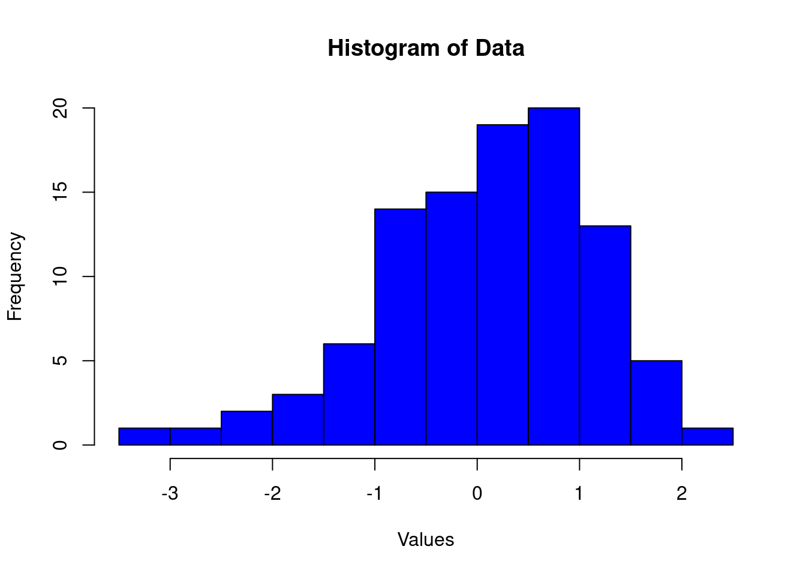
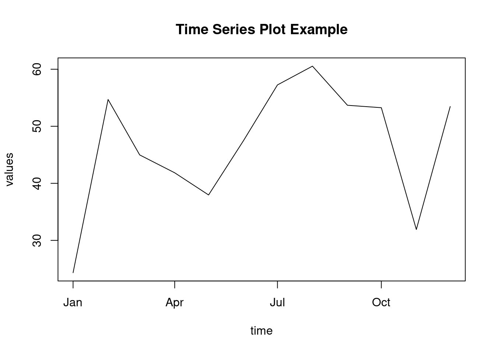

Graphing Your Data
Graphing Your Data
Identifying Differences in Types of Data and How to Graph
Why Graph Data? Benefits
Graphs are crucial in data analysis and presentation because they help:
Quick Interpretation: Graphs provide a quick overview of data trends, making them easier to interpret than tables.
Pattern Identification: They help identify patterns, relationships, and outliers.
Hypothesis Generation: Aids in forming research hypotheses.
Audience Engagement: Captures and maintains the audience’s attention.
Decision Support: Facilitates evidence-based decision-making.
Data Types
Categorical Data:
- Nominal: No inherent order or ranking (e.g., coffee, tea, water).
- Ordinal: Has a meaningful order or ranking (e.g., small, medium, large).
Pros: Easy to categorize and analyze.
Cons: Limited statistical techniques apply, and numerical differences are not meaningful.- Nominal: No inherent order or ranking (e.g., coffee, tea, water).
Continuous Data:
- Interval: Has equal intervals between values but no true zero (e.g., temperature, dates).
- Ratio: Has a meaningful zero point and equal intervals (e.g., weight, strength, pressure).
Pros: Wide range of statistical techniques available.
Cons: Requires more complex handling due to scale.- Interval: Has equal intervals between values but no true zero (e.g., temperature, dates).
Types of Graphs
Univariate Graphs:
- Definition: Focuses on a single variable.
- Examples: Histograms, Box plots.
Pros:
- Simple and intuitive.
- Provides distributional insights.
Cons:
- Limited to understanding one variable.
Bivariate Graphs:
- Definition: Displays the relationship between two variables.
- Examples: Scatter plots, Box plots.
Pros:
- Useful for studying relationships and trends.
Cons:
- Might not reveal hidden multivariate trends.
Multivariate Graphs:
- Definition: Involves multiple variables.
- Examples: Scatter plot matrices, Mosaic plots, Treemaps.
Pros:
- Effective for uncovering complex relationships.
Cons:
- Interpretation can be challenging without proper labels.
Stephen Few’s Graphic Data Display Key Points
- Know Your Audience: Understand how your audience processes information to tailor your visualizations effectively.
- Define Your Message: Clearly convey your message simply and quickly.
- Use Visual Elements Appropriately: Combine words, numbers, and images meaningfully.
- Principles of Excellence: Based on Edward Tufte’s principles of good graphical design:
- Enforce Visual Comparisons: Allow comparisons between data points.
- Show Causality: Highlight causal relationships if possible.
- Integrate All Visual Elements: Include relevant text and numbers to provide context.
- Content-Driven Design: Ensure design is driven by data quality, relevance, and integrity.
Principles of Good and Bad Graphical Design
Tips and Tricks
- Graphical Excellence:
- Show Multivariate Data: Present data across multiple dimensions.
- Integrate All Visual Elements: Include text, numbers, and images cohesively.
- Use Quality, Relevant, and Honest Data: Ensure data integrity and honesty.
- Common Mistakes:
- Distorting Data Meaning: Misleading visuals distort interpretation.
- Incorrect Scaling: Scaling errors can misrepresent data trends.
- Poor Data-to-Ink Ratio: Avoid excessive chart junk that doesn’t add value.
Graph Types and How to Use Them
Histogram
- Definition: Graphical representation of data distribution using bins of equal length to count frequencies.
- Pros:
- Helps visualize the distribution shape.
- Easy to compare different distributions.
- Identifies outliers and skewness.
- Cons:
- Bin size selection can lead to over or under-smoothing.
- Not suitable for small data sets.
# Create a histogram in R
data <- rnorm(100)
hist(data, main = "Histogram of Data", xlab = "Values", col = "blue", border = "black")Box Plot

- Definition: Graphically represents data distribution based on quartiles, highlighting outliers, median, and spread.
- Pros:
- Effective for identifying outliers.
- Compares multiple groups easily.
- Robust to non-normal data.
- Cons:
- Less informative for small data sets.
- Not ideal for displaying multimodal distributions.
# Create a box plot in R
data <- rnorm(100)
boxplot(data, main = "Box Plot Example")Pie Chart

- Definition: Displays relative proportions in part-to-whole relationships using slices of a circle.
- Pros:
- Visually intuitive.
- Effective for simple categorical data.
- Cons:
- Difficult to compare proportions across different charts.
- Not suitable for large numbers of categories.
- Can distort differences due to angle perception issues.
# Create a pie chart in R
values <- c(10, 20, 30, 40)
labels <- c("A", "B", "C", "D")
pie(values, labels = labels, main = "Pie Chart Example")Scatter Plot

- Definition: Shows the relationship between two continuous variables.
- Pros:
- Identifies correlations and relationships between variables.
- Highlights clusters and patterns.
- Detects outliers effectively.
- Cons:
- Can suffer from overplotting with large data sets.
- Requires understanding of correlation interpretation.
# Create a scatter plot in R
x <- rnorm(100)
y <- rnorm(100)
plot(x, y, main = "Scatter Plot Example", xlab = "X-axis", ylab = "Y-axis")Mosaic Plot

- Definition: Displays the relationships between two or more categorical variables using a stacked rectangle visualization.
- Pros:
- Effective for identifying associations in contingency tables.
- Highlights interactions between variables.
- Cons:
- Interpretation can be challenging for complex relationships.
- Less intuitive than simpler visualizations.
# Create a mosaic plot in R
library(vcd)
data(Titanic)
mosaic(Titanic, shade = TRUE, legend = TRUE)Bar/Column Chart

Definition: A bar or column chart compares data across categories using rectangular bars, where each bar’s length represents the value or frequency of a category. The bars can be vertical (column chart) or horizontal (bar chart).
Pros:
- Easily Compares Data:
- Makes it simple to compare data across different categories.
- Highlights significant differences between groups.
- Quick Insight:
- Provides immediate visual insights into category differences.
- Suitable for presenting data to non-technical audiences.
- Intuitive Interpretation:
- Clear and straightforward representation.
- Suitable for a wide range of audiences due to its intuitive nature.
- Flexibility:
- Can represent both frequency (count data) and summary statistics (e.g., means, medians).
- Can be customized with different bar colors, stacking, grouping, etc.
- Easily Compares Data:
Cons:
- Misleading Scaling:
- Can mislead if bar lengths, axis scales, or data representations are inconsistent.
- Improper axis truncation may exaggerate or minimize differences.
- Overloading with Categories:
- Too many categories can clutter the chart, making it hard to interpret.
- Limited space can lead to overlapping labels, hindering readability.
- Not Ideal for Continuous Data:
- Works best with categorical data but not suitable for continuous variables.
- Summarizing continuous data into categories can lead to loss of detail or oversimplification.
- Chart Junk:
- Excessive use of gridlines, 3D effects, or non-data elements can lead to “chart junk,” distracting from the data itself.
- Data-to-Ink Ratio:
- Low data-to-ink ratio due to large bars relative to the actual information conveyed.
- Misleading Scaling:
Summary:
Bar/column charts are highly effective for comparing categorical data and highlighting category differences. However, careful attention to scaling and data representation is crucial to ensure accurate and clear visualization.
# Create a bar chart in R
categories <- c("A", "B", "C", "D")
values <- c(10, 20, 30, 40)
barplot(values, names.arg = categories, main = "Bar Chart Example", col = "blue")Quantile Plot

Definition: Displays cumulative quantiles of a distribution versus expected quantiles (e.g., normal distribution).
Pros:
- Identifies Distribution Deviations:
- Clearly shows deviations of data distribution from a theoretical distribution.
- Efficient Distribution Fit Determination:
- Quickly determines whether the data fits a specific distribution.
- Identifies Distribution Deviations:
Cons:
- Requires Statistical Knowledge:
- Accurate interpretation requires understanding quantile statistics.
- Less Intuitive:
- Less intuitive than histograms or box plots for non-technical audiences.
- Requires Statistical Knowledge:
Summary:
Quantile plots are ideal for identifying distribution deviations from theoretical distributions. However, they require statistical knowledge for accurate interpretation and might be less intuitive than other visualization techniques.
# Create a quantile plot in R
data <- rnorm(100)
qqnorm(data)
qqline(data, col = "blue")Treemap
Warning: package 'treemap' was built under R version 4.5.2
Definition: Visualizes hierarchical data using nested rectangles.
Pros:
- Displays Large Amounts of Data Efficiently:
- Suitable for representing large hierarchical data sets.
- Intuitive for Showing Hierarchical Relationships:
- Clearly shows hierarchical relationships in a visual format.
- Highlights Patterns and Clusters Visually:
- Highlights patterns, clusters, and outliers effectively.
- Displays Large Amounts of Data Efficiently:
Cons:
- Distorts Proportions if Sizes are Too Small:
- Smaller rectangles can become unreadable and distort proportions.
- Challenging to Interpret for High-Depth Hierarchies:
- Deep hierarchies can make interpretation challenging and confusing.
- Distorts Proportions if Sizes are Too Small:
Summary:
Treemaps are excellent for visualizing hierarchical data efficiently and intuitively. However, careful design is crucial to avoid distortions and ensure interpretability, especially with deep hierarchies.
# Create a treemap in R
library(treemap)
data <- data.frame(
category = c("A", "B", "C", "D"),
subcategory = c("A1", "B1", "C1", "D1"),
value = c(10, 20, 30, 40)
)
treemap(
data,
index = c("category", "subcategory"),
vSize = "value",
title = "Treemap Example"
)Advanced Graphs
Time Series Plots

- Definition: Displays data trends over time.
- Pros:
- Ideal for identifying trends, cycles, and seasonal patterns.
- Supports multiple time series on the same graph.
- Facilitates forecasting and future planning.
- Cons:
- Less effective for non-temporal data.
- Can suffer from overplotting with too many series.
# Create a time series plot in R
time <- seq(from = as.Date("2022-01-01"), by = "month", length.out = 12)
values <- rnorm(12, mean = 50, sd = 10)
plot(time, values, type = "l", main = "Time Series Plot Example")Maps
Warning: package 'maps' was built under R version 4.5.2
- Definition: Visualizes geographic data by plotting locations on maps.
- Pros:
- Provides spatial context to data.
- Effective for highlighting geographic patterns.
- Supports data aggregation at regional levels.
- Cons:
- Interpretation can be misleading without proper scaling.
- Requires geographic knowledge for accurate interpretation.
# Create a map in R
library(ggplot2)
library(maps)
world_map <- map_data("world")
ggplot(world_map, aes(x = long, y = lat, group = group)) +
geom_polygon(fill = "lightblue", color = "white") +
ggtitle("World Map Example")Unstructured Text
Word Cloud Example
- Definition: Summarizes text data numerically to gain insights.
- Pros:
- Extracts useful information from textual data.
- Identifies patterns and trends in large text corpora.
- Supports topic modeling and sentiment analysis.
- Cons:
- Requires preprocessing to handle noise and inconsistencies.
- Interpretation challenges due to language ambiguities.
# Summarize unstructured text in R
library(tm)
library(wordcloud)
text <- c("word1", "word2", "word3", "word1", "word2")
corpus <- Corpus(VectorSource(text))
tdm <- TermDocumentMatrix(corpus)
word_freq <- sort(rowSums(as.matrix(tdm)), decreasing = TRUE)
wordcloud(names(word_freq), word_freq, scale = c(3, 0.5), colors = brewer.pal(8, "Dark2"))References
- Tufte, Edward R. The Visual Display of Quantitative Information. Graphics Press, 2001.
- Few, Stephen. Now You See It: Simple Visualization Techniques for Quantitative Analysis. Analytics Press, 2009.